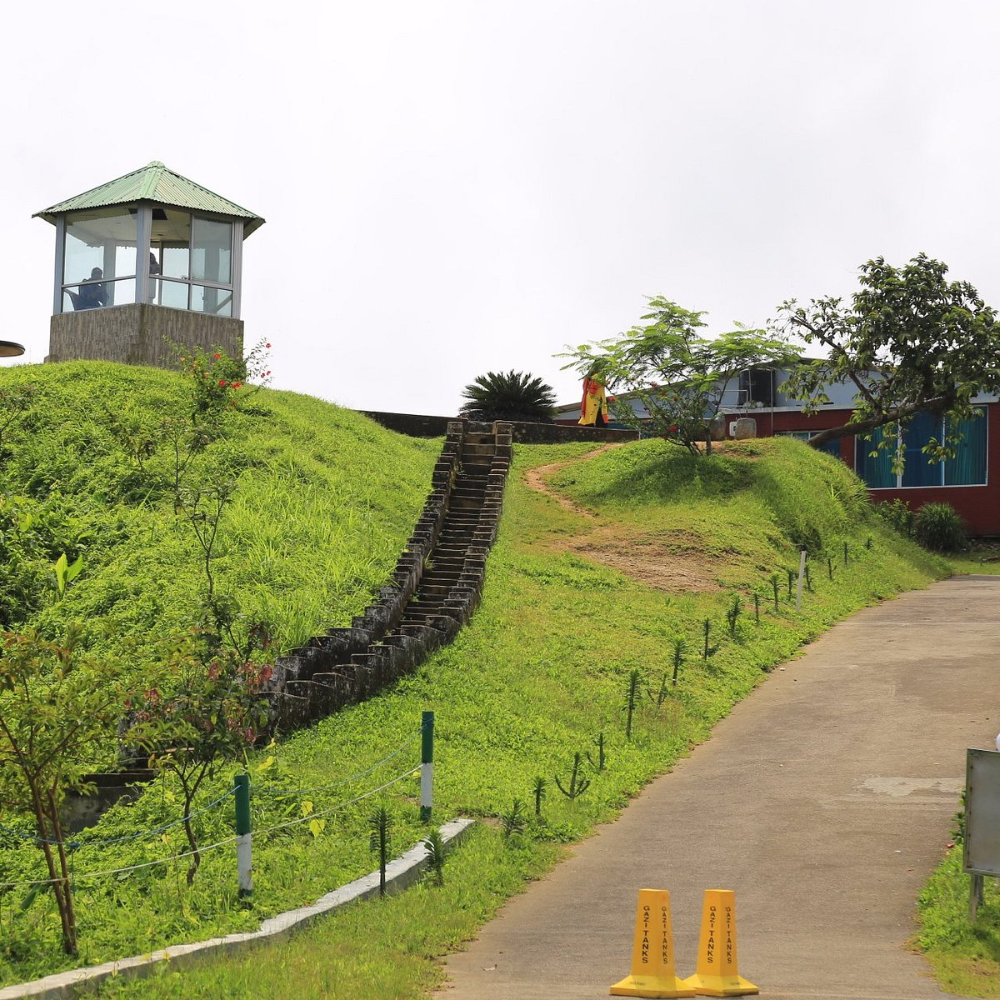
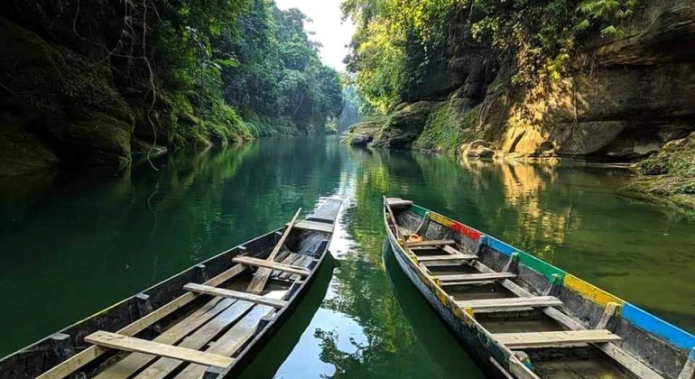
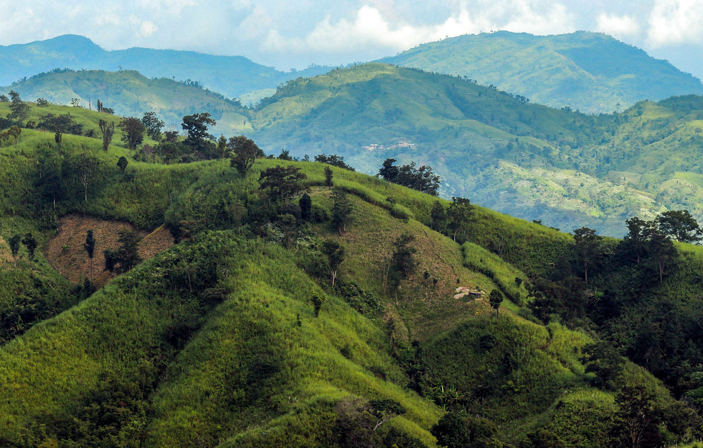

Top Tourist Attractions
Nilgiri Hills

Experience the clouds and breathtaking views from Nilgiri Hills. It's a must-see spot for trekkers and nature enthusiasts, offering panoramic views of lush green hills.
Boga Lake
.jpg)
A mystical lake surrounded by hills, perfect for trekking and camping. It’s one of the highest lakes in Bangladesh and offers a tranquil environment for visitors.
Debotakhum

Debotakhum is a spectacular canyon with crystal-clear water, surrounded by towering cliffs. Visitors can explore it by raft, making it an adventurous yet serene experience in the heart of nature.
Sangu River

Sangu River is a hidden gem of Bandarban, flowing through misty valleys and lush green landscapes.
Mirinja Valley

Mirinja Valley offers breathtaking panoramic views of the rolling hills and lush green landscapes. It’s a perfect spot for nature lovers and photographers.
Keokradong

Keokradong is the country’s second-highest mountain, where misty trails and rugged beauty create an unforgettable trek.